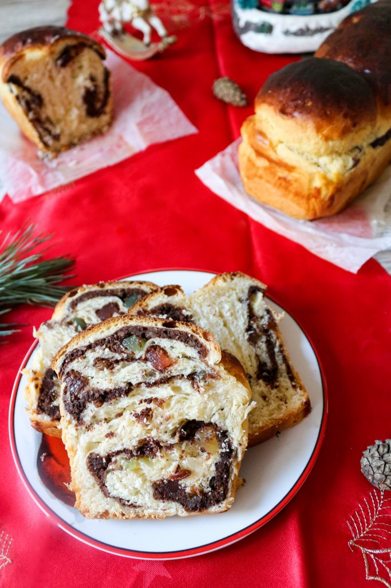

Cozonac

We recommend making cozonac during the holidays, like Christmas time or Easter, so that you can enjoy it with your entire family. Or for them to help you with the clean up.
Ingredients
Dough
- 1 kg flour
- 50 g fresh yeast
- 500 ml milk
- 350 g sugar
- 1 vanilla bean
- 100 g butter at room temperature
- 100 ml sunflower oil
- 5 egg yolks
- 1 teaspoon salt
- Zest from one lemon and one orange
Filling
- 400 g finely chopped walnuts
- 5 egg whites
- 5 tablespoons sugar
- 3 tablespoons cocoa
- Raisins
- Turkish delight
- An extra egg and a bit of milk for brushing
Preparing Cozonac
- Gather all your ingredients.
- Give your kids something to stir or bang on harmlessly.
- Warm the milk along with the sugar and the vanilla bean seeds, adding the entire vanilla bean to the milk as well. The milk should just be warm when you try it with your finger, not hot!
- Use a fork to dissolve the fresh yeast with 3-4 tablespoons of the warm milk.
- Sift the flour 3 times. This is an important step, so don't skip it.
- (Optional)Go to the restroom quickly while telling your munchkins to wait for you quietly without breaking anything.
- Return to the kitchen to a re-enacted scene of world war II, with flour and eggs used as chemical weapons and artillery.
- Clean up mess.
- Go the the bakery shop and buy a nice, big cozonac.
- Try again next year.
Happy Holidays!!